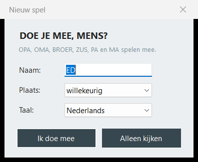
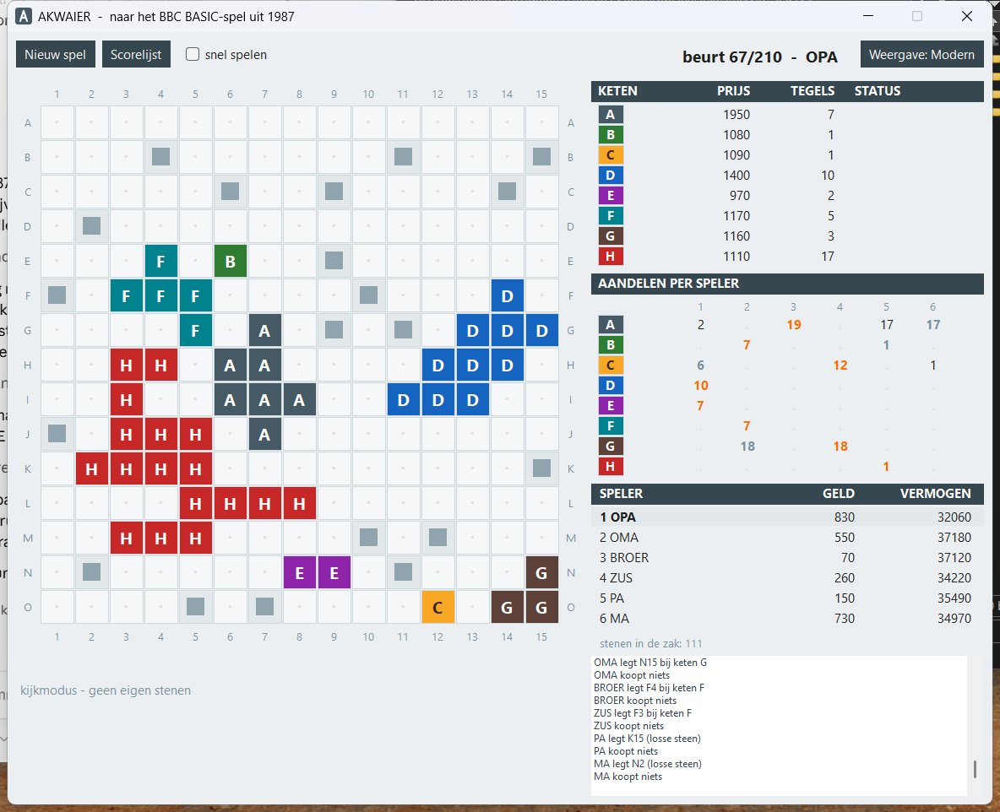
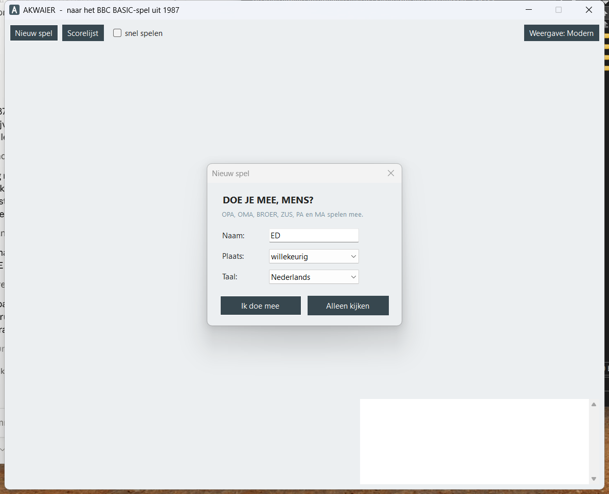
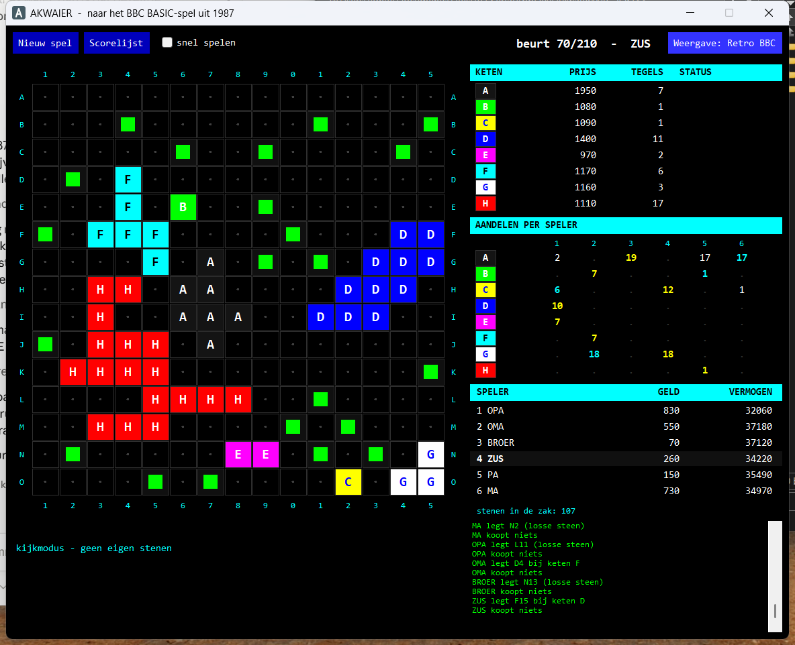

Dit is de Windows-uitvoering van het BBC Micro-programma AQUIRE.BBC
uit 1987. De regels zijn die van dat programma, niet die van het bordspel van
Sid Sackson. Op twee punten wijkt het duidelijk af, en dat is geen fout in de
omzetting: zie Stichten en Losse stenen.
Starten

Dubbelklik op Akwaier-app\Akwaier.exe. Er hoeft niets
geïnstalleerd te worden: de hele runtime zit in dat ene bestand.
Vraagt Windows om “.NET 8.0 Desktop Runtime”, dan heb je een
ander bestand te pakken. Kijk of je echt in de map Akwaier-app zit.
Bij het opstarten verschijnt DOE JE MEE, MENS? — de vraag uit regel 2009 van het origineel.
| Veld | Betekenis |
|---|---|
| Naam | jouw naam in het spel, hoogstens acht letters |
| Plaats | op welke stoel je zit; willekeurig laat het lot beslissen, net als vroeger |
| Taal | Nederlands of Engels; alles verandert mee, ook de namen van de medespelers |
| Ik doe mee | je speelt zelf; de andere vijf zijn de computer |
| Alleen kijken | alle zes worden door de computer gespeeld en jij kijkt toe |
De vaste medespelers heten OPA, OMA, BROER, ZUS, PA en MA — het was een familiespel. In het Engels heten ze GRANDPA, GRANDMA, BROTHER, SISTER, DAD en MUM. Jouw naam vervangt die van de stoel waarop je gaat zitten.
De eerste keer kiest het spel de taal zelf: staat Windows op Nederlands, dan begint het in het Nederlands, en anders in het Engels. Zet je de taal in de startdialoog om, dan onthoudt het spel dat voor de volgende keer.
Het scherm

Het bord
Rijen heten A tot en met O van boven naar beneden, kolommen
1 tot en met 15 van links naar rechts. Een vakje heet dus
B7: rij B, kolom 7 — eerst de letter, dan het cijfer.
Dat de nummers van je eigen stenen op het bord staan, komt uit regel 3571 van het origineel. Je ziet zo in één oogopslag waar je heen kunt.
Het gegevenspaneel rechts
- KETEN — per keten de prijs van één aandeel, het aantal tegels, en of hij nog gesticht kan worden.
- AANDELEN PER SPELER — wie hoeveel heeft. De grootste aandeelhouder staat oranje, de op één na grootste gedempt. Alleen die twee krijgen bij een fusie geld, dus daar kijk je naar.
- SPELER — banksaldo en vermogen. Vermogen is je geld plus de waarde van al je aandelen tegen de huidige prijs; daarop wordt aan het eind afgerekend. Wie aan de beurt is, staat op een balkje.
De rest
Onder het bord liggen je acht stenen met hun vaknaam; grijs betekent dat je die nu niet kwijt kunt. De knoppenstrook daaronder verandert mee met wat er van je gevraagd wordt, en de regel eronder zegt in gewone taal wat er moet gebeuren. Rechtsonder houdt het meldingenvak bij wat iedereen doet.
Bovenin staan Nieuw spel, Scorelijst, het vinkje snel spelen — dan wachten de computerspelers nauwelijks meer — de beurtteller, en rechts de knop Weergave.
Een beurt, stap voor stap

1 · Kies een steen
Klik op een steen in de strook onder het bord, of meteen op het genummerde vakje op het bord zelf. De toetsen 1 tot en met 8 doen hetzelfde.
2 · Leg hem neer, of sticht een keten
- Leg … neer — de gewone zet. Erbij staat wat er gebeurt: (losse steen) als het vakje vrij ligt, of bij keten X als hij aan een bestaande keten vast komt.
- Sticht keten op … — verschijnt alleen als het vakje helemaal vrij ligt én er nog een keten te vergeven is. Daarna kies je met de gekleurde knoppen welke.
- Annuleer — terug naar de keuze.
Kan een steen nergens heen, dan staat er hier leggen mag niet. Kun je met geen enkele steen iets, dan verschijnt Pas deze beurt.
3 · Bij gelijkspel: kies de winnaar
Raakt je steen twee even grote ketens, dan bepaal jij welke blijft bestaan. Dat is een echte keuze: de opgeslokte keten keert bonus uit, de overblijvende wordt groter en duurder.
4 · Kopen
Daarna koop je hoogstens drie aandelen van één keten, of je klikt Koop niets. Op de knoppen staat de prijs; ketens die je niet kunt betalen worden niet aangeboden.
De regels
Het bord en de stenen
Er zijn 225 stenen, één voor elk vakje. Iedereen heeft er acht in de hand en trekt na elke zet een nieuwe uit de zak. Is de zak leeg, dan raakt de hand langzaam op.
Stichten
Een keten stichten kan alleen op een vakje waarvan alle vier de buren leeg zijn. De keten begint dan met één tegel, en jij krijgt er één gratis aandeel bij.
Dit is het grootste verschil met het bordspel Acquire, waar een keten ontstaat
door naast een losse steen te leggen. Hier gaat het andersom, en het is geen
omzetfout: PROCcontroleer_vrij op regel 2500 van het origineel doet
precies dit.
Losse stenen
Leg je een steen op een vrij vakje zonder te stichten, dan blijft het een losse steen: een grijs blokje dat bij geen keten hoort en niets waard is.
Zo'n losse steen wordt pas opgeslokt als iemand er een steen naast legt die tegelijk een bestaande keten raakt. Dan gaan de nieuwe steen én de losse buren in die keten op.
Daarom geldt: naast een losse steen leggen mag niet als je geen keten raakt. Er zou anders ongemerkt een keten ontstaan; het programma laat die zet niet toe.
Wat een aandeel kost
De prijs van één aandeel hangt af van de grootte van de keten en van hoeveel aandelen er in omloop zijn:
prijs = basisprijs + 100 per gehaalde drempel + 10 per uitstaand aandeel| Keten | A | B | C | D | E | F | G | H |
|---|---|---|---|---|---|---|---|---|
| Basisprijs | 900 | 900 | 800 | 700 | 700 | 600 | 500 | 400 |
De drempels liggen bij 1, 2, 3, 4, 5, 10, 15, 20, 25 en 36 tegels. Een keten van vijf tegels heeft er dus vijf gehaald.
Voorbeeld. Keten C met vijf tegels kost 800 + 5 × 100 = 1300. Zijn er ook nog vier aandelen C in omloop, dan wordt het 1340.
Hoe groter een keten wordt, hoe duurder de aandelen — en hoe meer je bezit ervan waard wordt. Een keten die niet bestaat, kost niets en kun je niet kopen.
Fusie
Raakt een gelegde steen twee of meer ketens, dan blijft de grootste bestaan en gaan de andere er helemaal in op. Bij gelijke grootte kiest de speler die legt. Voor elke opgeslokte keten gebeurt dan dit:
- De bonuspot wordt gerekend met de grootte en de prijs van vóór de fusie: (aantal tegels + aantal uitstaande aandelen) × aandeelprijs.
- De pot gaat naar de grootste aandeelhouders, meestal twee derde naar de eerste en een derde naar de tweede. Bij gelijk bezit anders:
| Situatie | Verdeling |
|---|---|
| maar één aandeelhouder | alles naar hem |
| nummers 1, 2 en 3 gelijk | elk een derde |
| nummers 1 en 2 gelijk | elk de helft |
| nummers 2 en 3 gelijk | ⅔ — ⅙ — ⅙ |
| nummers 2 t/m 4 gelijk | ⅔ en de rest in drieën |
| nummers 2 t/m 5 gelijk | ⅔ en de rest in vieren |
| nummers 2 t/m 6 gelijk | ⅔ en de rest in vijven |
| anders | ⅔ — ⅓ |
- De aandelen worden omgeruild: voor elke twee aandelen in de verdwenen keten krijg je er één in de winnende keten terug. De rest vervalt.
- De verdwenen keten staat daarna weer op de lijst en kan opnieuw gesticht worden.
Voorbeeld. Keten A heeft drie tegels bij een aandeelprijs van 1300; er zijn tien aandelen in omloop, verdeeld als 6 – 3 – 1. A gaat op in B. De pot is (3 + 10) × 1300 = 16.900. De grootste aandeelhouder krijgt 11.267, de tweede 5.633, de derde niets. Hun aandelen worden 3, 1 en 0 aandelen B.
Fuseren drie ketens tegelijk, dan wordt dit voor elke opgeslokte keten apart gedaan.
Wanneer het spel afloopt
Zodra een van deze drie zich voordoet:
- een keten wordt groter dan 100 tegels;
- er zijn 210 beurten gespeeld — 35 rondes;
- niemand kan een ronde lang nog een steen kwijt.
Daarna volgt de eindstand op vermogen, en de zes uitslagen gaan de scorelijst in.
Die bewaart de dertig hoogste vermogens in akwaier-scores.json naast
het programma — de opvolger van het bestand SCORE uit 1987. In
datzelfde bestand staat ook welke taal je het laatst gekozen hebt.
Waar het om draait
- Stichten is gratis geld. Je krijgt er een aandeel bij zonder te betalen, en je bepaalt zelf welke kleur. Zie je een vrij liggend vakje, denk er dan aan.
- Je verdient aan ketens die verdwijnen, niet aan ketens die groeien. De bonus valt alleen bij een fusie, en alleen aan de eerste en tweede aandeelhouder. Derde zijn in een grote keten levert bij de fusie niets op.
- Kijk naar het aandelenblok. Sta je oranje of gedempt, dan zit je goed. Sta je er vlak onder, dan is één aankoop vaak genoeg om erin te komen.
- Een keten die al heel groot is, wordt zelden nog opgeslokt. Aandelen daarin zijn wel steeds meer waard voor je eindvermogen, want vermogen telt aandelen tegen de huidige prijs mee.
- Een steen die je niet kwijt kunt, blijft in de weg liggen. Je trekt pas een nieuwe als je er een gespeeld hebt.
De computerspelers denken zoals in 1987: ze stichten zodra het kan, kiezen anders de steen die de gunstigste fusie oplevert — het liefst een fusie waarbij een keten verdwijnt waarin ze zelf bij de eerste twee staan — en kopen daar waar hun positie bedreigd wordt.
De twee weergaven

Met de knop Weergave rechtsboven wissel je tussen:
- Modern — rustige kleuren, kolomnummers 1 tot en met 15, lichte achtergrond.
- Retro BBC — de kleuren van het BBC Micro-scherm, uit
DATA 29000-29007van het origineel: A zwart, B groen, C geel, D blauw, E magenta, F lichtblauw, G wit, H rood. Zwarte achtergrond, en de kolomkop staat er net als toen als123456789012345.
Alleen het uiterlijk verandert; het spel loopt gewoon door. Twee kleuren zijn bijgesteld omdat ze op een scherm niet te lezen waren: het vlak van keten A is donkergrijs in plaats van zuiver zwart, en de F heeft een zwarte letter gekregen.
Als er iets misgaat
| Wat je ziet | Wat het is |
|---|---|
| Windows vraagt om “.NET 8.0 Desktop Runtime” | je start niet Akwaier-app\Akwaier.exe maar een ander bestand |
| een venster met een foutmelding | het spel loopt door; de volledige melding komt in akwaier-fout.txt naast het programma |
| de scorelijst is leeg | er is nog geen partij uitgespeeld, of akwaier-scores.json is weggegooid |
| je wilt de scorelijst wissen | verwijder akwaier-scores.json; het spel maakt een nieuwe aan en kiest de taal weer aan de hand van Windows |
| het spel start in het Engels | Windows staat niet op Nederlands; zet Taal in de startdialoog om, dan onthoudt hij het |
Wil je nagaan of de spelregels nog goed werken na een verandering in de broncode:
Akwaier-app\Akwaier.exe zelftestDat rekent tien proeven na, waaronder zestig volledig uitgespeelde partijen, en
schrijft het verslag in akwaier-zelftest.txt.